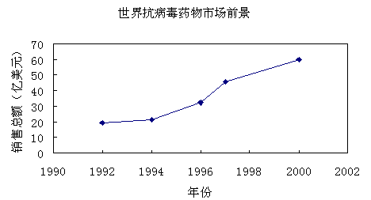

一、药物背景
剂型：喷雾剂（外用）
规格：10 ml/瓶，50ml/瓶
服药方法：喷于患处皮肤，每日3次。
功能主治：清热解毒，驱风止痛。用于人类单纯疱疹病毒引起的单纯疱疹性角膜炎、口腔炎与生殖器疱疹，以及水痘、带状疱疹病毒引起的带状疱疹。
项目进展：已获得临床研究批件。
二、市场前景
疱疹是临床上极常见的病症，表现为单纯性疱疹、生殖性疱疹和带状疱疹。单纯疱疹病毒引起单纯性疱疹、生殖性疱疹，在国外，生殖性疱疹的发病率在性病中仅次于淋病和梅毒，居性病发病率的第3位，并与艾滋病、宫颈癌等的发生密切相关。带状疱疹是水痘带状疱疹病毒引起的皮肤感染。其来势快，疼痛难忍且病程长。
740)this.width=740" border="undefined">
随着社会快节奏发展和国际间频繁交流，新生病毒不断滋生传播，严重威胁着人类健康，带状疱疹与病毒性水痘等皮肤病发病逐年升高，使抗病毒药成为世界医药市场令人关注的领域。抗病毒药世界销售总额逐年上升（见上图），至2005年其销售市场仍会保持强劲的增长势头。其中，抗疱疹病毒药的市场份额约占抗病毒药物市场35%-46%左右。
病毒灵喷雾剂为天然中药复方制剂，具有疗效显著、根除病毒的优点，可望在生殖器疱疹病毒的治疗中大显身手，在单纯性疱疹性角膜炎、口腔炎，带状疱疹、生殖性疱疹等治疗领域具有良好的市场前景。目前，病毒灵喷雾剂已申请专利保护，并已完成临床前研究，获得了临床批件（2006L01153）。
三、特色优势
世界各国至1999年底批准的抗疱疹病毒药共21个，近50%的抗疱疹病毒药全身用药毒副作用较大，只能局部给药治疗眼及皮肤疱疹病毒感染。目前我国市场占有率较大的抗疱疹病毒药主要有阿昔洛韦（aciclovir, ACV）、伐昔洛韦（valaciclovir，VCV）、泛昔洛韦（famciclovir，FCV）常用于治疗疱疹性疾病，均有一定的临床价值，但远非理想的治疗药物。疱疹感染患者迫切期盼安全、有效、价廉的药物。本项目开发的新药将凭借3方面优于现有药物的优势特色，产业化后可望获取可观的市场份额。
①价格优势
以一般抗疱疹病毒药比较为例，病毒灵喷雾剂单疗程治疗费用估算为75.00元，符合我国国情的中、低端市场，有价格优势。
|
药品 |
日费用（元/d） |
治疗费用（元/疗程） |
|
阿昔洛韦分散片 |
7.5 |
112.5 |
|
盐酸万乃洛韦片 |
40 |
600 |
|
酞丁胺软膏 |
10 |
150 |
|
病毒灵喷雾剂 |
5 |
75 |
②生产成本优势
病毒灵药材价格低廉，易得，原料成本仅为0.1元/瓶。同时，病毒灵采用最新微波提取技术，大幅度地减少提取时间和降低能耗，与传统提取技术比较具有生产时间短、效率高、溶剂用量少、杂质少、纯度高等优点，可使产品优质低价，具备极强的竞争性，有生产成本优势。
|
|
提取时间 |
溶剂用量 |
绿原酸含量 |
挥发油量 |
浸膏量 |
杂质 |
|
传统提取 |
240min |
24倍 |
2.1-3mg/ml |
≤0.1ml/100g |
15% |
3-13% |
|
微波提取 |
60min |
10倍 |
1.9~3 mg/ml |
<0.1ml/100g |
10% |
2-4% |
③临床治疗优势
临床研究显示，治疗组总有效率为88.8％，同比对照组为63.3％，具显著差异(P<0.01)；科研临床研究显示，与酞丁胺软膏对照组总有效率为63.3%比较，病毒灵治疗组总有效率为88.8%，差异有显著性(p<0.01)。
临床研究
|
组别 |
例数 |
治愈 |
有效 |
无效 |
显效率 % |
有效率 % |
|
治疗 |
热疮(单纯疱疹) |
40 |
21 |
14 |
5 |
52.5 |
87.5 |
|
蛇窜疮(带状疱疹) |
42 |
12 |
24 |
6 |
28.6 |
85.7 |
|
生殖器疱疹 |
30 |
18 |
10 |
2 |
60.0 |
93.3 |
|
对照 |
热疮(单纯疱疹) |
30 |
8 |
15 |
7 |
26.7 |
76.7 |
|
蛇窜疮(带状疱疹) |
30 |
3 |
12 |
15 |
10.0 |
50.5 |
科研临床研究
|
|
痊愈 |
显效 |
有效 |
无效 |
总有效率(%) |
|
治疗 |
带状疱疹 |
3 |
4 |
4 |
1 |
91.7 |
|
单纯疱疹 |
4 |
5 |
3 |
0 |
100 |
|
生殖器疱疹 |
5 |
5 |
2 |
0 |
100 |
|
对照 |
带状疱疹 |
0 |
2 |
5 |
5 |
58.3 |
|
单纯疱疹 |
1 |
2 |
4 |
5 |
58.3 |
|
生殖器疱疹 |
1 |
2 |
5 |
4 |
66.7 |
临床应用显示，病毒灵喷于患处，既能迅速缓解疼痛，又能使创面迅速收敛，进而控制局部蔓延，促进疮口结痂愈合。病毒灵外用制剂充分发挥了中药复方的整合作用——抗病毒、止痛、抗炎等，并明显缩短病程。治疗特点为起效快，疗程短，无刺激及其它副作用，特别对耐阿昔洛韦的患者效果良好，具有临床治疗优势。